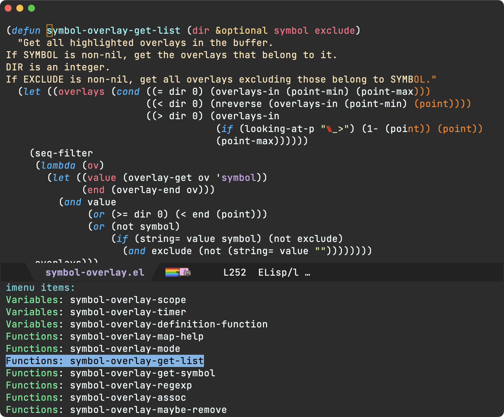

Álvaro Ramírez
It's all up for grabs, compound with glue
I've written before, once you learn a little elisp, Emacs becomes this hyper malleable editor/platform. A live playground of sorts, where almost everything is up for grabs. You can inspect and tweak behaviour of just about anything to your liking.
While the compounding benefits of using your favourite Emacs utilities are evident over time, learning elisp takes the compounding effect to another level. It empowers you to have those aha moments like "if I could just wire this awesome utility with that other one, it'd be perfect for me" and enable you to act on it.
Take, for example, symbol-overlay and multiple-cursors. Two Emacs packages I've been using for years. The first one is a feature you've likely experienced on your favourite IDE or editor without thinking too much about it. Placing your editor cursor on a variable automatically highlights its usages. It's one of those lovely features with zero learning demands.
The second utility, multiple-cursors, does demand some learning but can be so fun to use once you get the hang of it. Below is a little multiple cursor demo I used recently in a reddit comment, but you really should check out Emacs Rocks! Episode 13: multiple-cursors (stick around for the ending).
So where am I going with this? While symbol-overlay offers a mechanism to rename symbols via symbol-overlay-rename, I prefer multiple-cursors for this kind of thing… "if I could just get symbol-overlay to tell multiple-cursors where to place my cursors, it'd be just perfect for me".
I've been wanting this tweak for some time. Today's the day I finally act on it. I had no idea how to go about it, but opening symbol-overlay.el (via M-x find-library symbol-overlay) and browsing through all functions (via imenu) yields the first piece I needed: symbol-overlay-get-list.

(defun symbol-overlay-get-list (dir &optional symbol exclude) "Get all highlighted overlays in the buffer. If SYMBOL is non-nil, get the overlays that belong to it. DIR is an integer. If EXCLUDE is non-nil, get all overlays excluding those belong to SYMBOL." ...)
Let's take symbol-overlay-get-list for a spin, courtesy of M-x eval-expression, and see what we get out of it:

With a list of overlays, we now know where to tell multiple-cursors to do its thing. For the second piece, we needed to peek at any of the multiple-cursors commands I already use. I happen to pick mc/mark-all-like-this to examine what's under the hood.
(defun mc/mark-all-like-this () "Find and mark all the parts of the buffer matching the currently active region" (interactive) (unless (region-active-p) (error "Mark a region to match first.")) (mc/remove-fake-cursors) (let ((master (point)) (case-fold-search nil) (point-first (< (point) (mark))) (re (regexp-opt (mc/region-strings) mc/enclose-search-term))) (mc/save-excursion (goto-char 0) (while (search-forward-regexp re nil t) (push-mark (match-beginning 0)) (when point-first (exchange-point-and-mark)) (unless (= master (point)) (mc/create-fake-cursor-at-point)) (when point-first (exchange-point-and-mark))))) (if (> (mc/num-cursors) 1) (multiple-cursors-mode 1) (mc/disable-multiple-cursors-mode)))
The star of the mc/mark-all-like-this attraction is mc/create-fake-cursor-at-point, used to create each cursor. If we can just iterate over the overlays, we'd be able to create a fake cursor per overlay. There's some additional logic needed to ensure all fake cursors are placed in the same relative position within symbol (using an offset). Finally, we need to enable multiple-cursors-mode.
We put it all together in ar/mc-mark-all-symbol-overlays:
(defun ar/mc-mark-all-symbol-overlays () "Mark all symbol overlays using multiple cursors." (interactive) (mc/remove-fake-cursors) (when-let* ((overlays (symbol-overlay-get-list 0)) (point (point)) (point-overlay (seq-find (lambda (overlay) (and (<= (overlay-start overlay) point) (<= point (overlay-end overlay)))) overlays)) (offset (- point (overlay-start point-overlay)))) (setq deactivate-mark t) (mapc (lambda (overlay) (unless (eq overlay point-overlay) (mc/save-excursion (goto-char (+ (overlay-start overlay) offset)) (mc/create-fake-cursor-at-point)))) overlays) (mc/maybe-multiple-cursors-mode)))
and with that, you finally get to see it all in action…
Unrelated - Want your own blog?
Like this blog? Want to start a blog? Run your blog off a single file. Write from the comfort of Emacs (or your favourite text editor) and drag and drop to the web. I'm launching a blogging service at lmno.lol. Looking for early adopters. Get in touch.